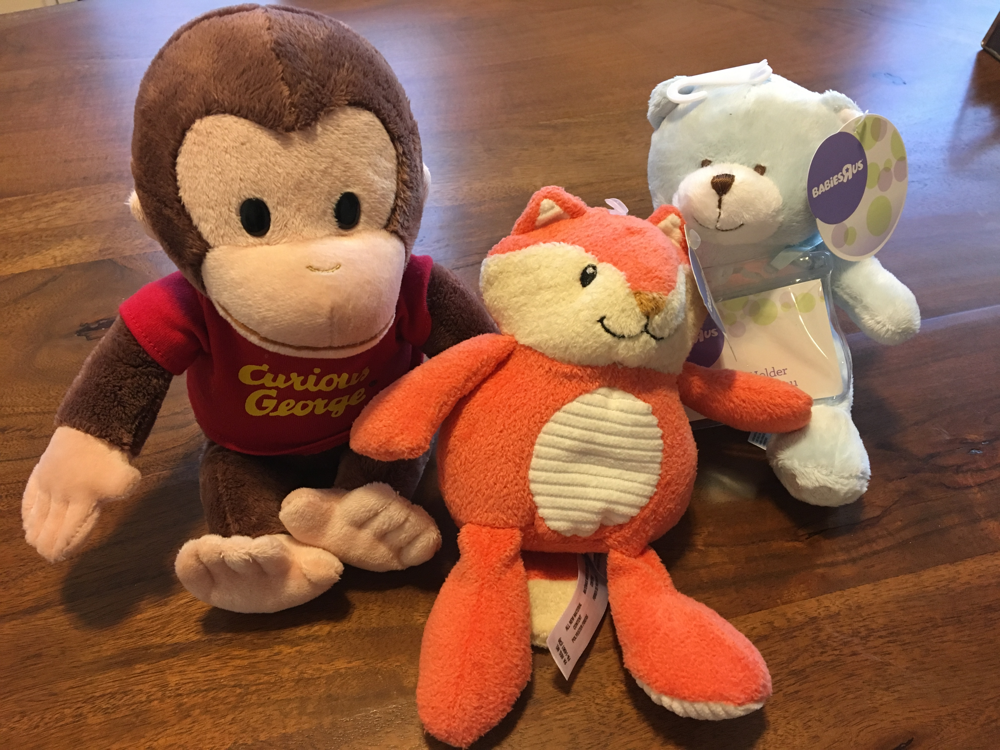

Concept Proposal


Modified Concept
After recieving in class feedback about my project proposal, I further defined my concept. It became apparnet that by focusing solely on nutrition I had lost the focus of my original idea, to encourage self esteem in young children.
Design Question
How can we encourage the development of soft skills in young children?
Design Values
- This product is for children ages 7-9. While hard skills such as math and science are introduced in school at this age, many softer skills such as self-discipline, confidence and emotional intelligence are often not as direct a focus in the curriculum . The product aims to further develop those skills to introduce these important concepts to children at a young age. The product will have particular relevance to children from households with low parental involvement.
- Children will encounter this project in their school cafeterias, while commuting to school or in between classes. The physical component, or game character, will fit inside of their lunch box. Children will play with the game during lunch, break or snack times. They will be able to play alone or with a friend, further helping the development of soft skills.
- While children are experiencing the game, they are helping their character navigate different social situations. When they choose the right path, they are rewarded by positive physical feedback. When they select a wrong option, they receive encouragement to keep trying. Lessons take the format of a game; successful choices reward students with points which encourages them to continue playing. Many games or lessons can be loaded on to the character. Parents and educators can submit lessons for approval to a library that any user can draw from.
- The project asks that its audience use free time in order to perform lessons. The goal of this project is to make lessons fun, so that the audience enjoys performing them.
- I want the audience to take away the importance of soft skills from their experience. I want them to learn to trust their own decision making processes and to not give into peer pressure. I want them to learn that kindness, compassion, and other people skills go a long way and are important to success. In addition I want the audience to learn independence. The audience will feel excited, entertained, confident, powerful, independent while using the project.
Context
Children ages 7-9 will interact with this product in the school cafeteria. Lunchtime is one of the only parts of the day where children are without instruction. The cafeteria is a prime location for peer pressure and bullying.
Intention
I plan to make a physical toy intended to function as a lunchbox companion that gives positive feedback when lessons are completed. Data and points from the toy will sync with the smartphone app accompanying the game. Gamification caters to children’s varying motivations and need for interaction, making learning fun. Children learn compassion, care, and sharing through playing with physical toys. Children will be rewarded through points in the game and physical feedback when they finish lessons on soft skills.
Impact
School teaches hard skills but there is a gap in soft skills which are equally important. The goal of my project is to help teach children self esteem, self confidence, and kindness. It is no longer sufficient to have a strong technical skills in today’s work force. Soft skills are crucial to success, as they are what allow for strong leadership and communication.
Prototype 1
I am in the early stages of designing an interactive experience to encourage positive behavior in children. Although I want to open up the design to include softs skills, not just nutrition, there were several things to consider while beginning the first prototype. A core consideration for this project is where it takes place. I wanted to find out if users are interested in interacting with it during lunchtime or at home.
USER TEST WHERE STUDENTS INTERACT
Criteria
One of the challenges that I am facing is creating a physical component that is small enough to be easily transported.
The physical component should feel more like a companion then a simple toy to play with, helping the user navigate through life situations.
The digital component should be kid friendly, simple and easy to use.
Physical Component
The first test I wanted to run for my physical component was color and feel. I purchased three stuffed animals, on in blue, pink, and brown. The purpose of these color selections was to choose a "boy" color, "girl" color, and "neutral" color to see which one was most attrictive to users. The more neutral color of the monkey was more popular, while the abstract form of the pink toy was most popular.
While the materials were all soft, they were different types of fuzzy. The two softer toys were made of plush with different piles, or thicknesses, and the third was made from a terrycloth material. The terrycloth material was more popular. Its rougher texture made it feel "less babylike", and more hip acording to user testing.
Digital Wireframe
While at first I had considered making a game, further game research made me question this choice. Lessons about soft skills are not necessarily given in levels, and the reward system was meant to be self satisfaction rather then points.
The important aspect of modern learning is gamification. Gamification adds game like elements to nongame situations. Gamification is proven to make lessons more enjoyable, causing higher retention rates.